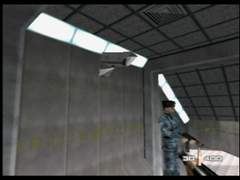
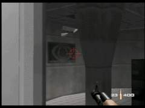
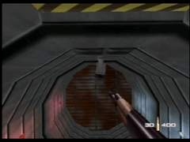
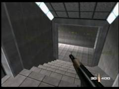
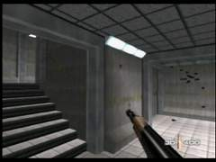
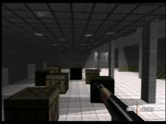
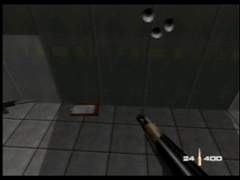
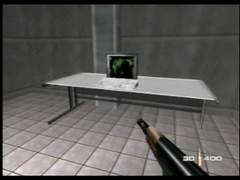
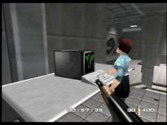
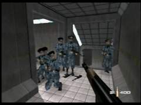

Peut-etre un des Niveaux les plus durs en 00 Agent, because pleins de Gardes, de Portes, de longs couloirs etc. Attention au KF7 Soviet, qui rameute tout le monde, et quand je dis tout le monde c'est TOUT le monde. Pour plus de sécurité, tirez en zoomant, vous pourez ainsi shooter une Balle par une Balle sans faire trop de bruit. Pratique !
Comparer Liste du Staff / Blessés : Secret Agent / 00 Agent
Pour cet Objectif, vous devez retrouver 2 Documents. Le 1er Document est pas loin de la Prison, l'autre est plus loin, dans une Salle bourrée de Gardes. Allons-y. Chopez la Clé avec la Montre Magnétique, et si vous sortez vite de votre Cellule, vous trouverez un Couteau de Lancer. Sortez et vous vous retrouverez dans un Couloir.

Nettoyez la Salle juste devant vous à gauche, celle avec le Coffre-Fort. Un des 3 gardes a une Clé sur lui qui vous servira plus tard...
Prenez à Gauche, montez l'Escalier, et à Droite vous trouverez une Salle avec le 1er Document. Prenez-le, et ensuite aller nettoyer la Partie "Rouge et Bleue" du Bunker. Il y a 3 Drones Guns à détruire si vous voulez récuperer un Gilet (en Agent). Une fois tout nettoyé, continuez votre Chemin. Il va falloir s'occuper des Cameras, puis on finira par le 2eme Document qui est plus loin...


Détruire les Cameras : Secret Agent / 00 Agent
Il y a 6 Cameras, toutes plus vicieuses que les autres. Voilà leur emplacements, dans l'ordre du parcours :
- A l'intersection juste avant la Grande Salle (n'y allez pas encore !)
- Dans la Salle ou il fallait amener Boris dans le Bunker 1. Chopez la Clé du Coffre par la meme occasion, sur un garde ! Récuperez le Livre Rouge et 2 Silencieux dans le Coffre !
- Salle du Radiateur (idem Bunker 1)
- Salle du Puits de Ventilation, au-dessus de votre Tete ! Récuperez la Cassette par la meme occasion (Salle suivante)
- Engagez-vous à droite en sortant de la Salle de la Cassette... L'Avant-Derniere est fourbe.
- Salle du 2eme Document.
- Grande Salle (idem Bunker 1 mais à Gauche sur le Mur)
















En entrant dans cette partie, il y a pas mal de Gardes, surtout la Salle avec le 2eme Document. Récuperez-le et l'Objectif est rempli tout seul. Revenez dans la Grande Salle cette fois et ruinez TOUT sauf les Ordinateurs. Ensuite allez vers la Prison et faites sortir Natalya pour la conduire dans la Grande Salle....
Récuperer la CCTV Tape : Tous Niveaux / Récuperer le Manuel du Goldeneye : 00 Agent
Ben, en principe, c'est fait si vous avez suivi mon chemin... Le Manuel est le Livre Rouge (celui dans le Coffre avec les 2 Silencieux) et la K7 est dans la Salle juste après le puits de ventilation. A propos, regardez un peu la gueule de la K7 dans votre inventaire... Sympa non ?
Se Sauver avec Natalya du Bunker : Tous Niveaux
Une fois le Bunker bien nettoyé de fond en combles, dans la Grande Salle, Natalya va aller seule vers un Ordinateur et un compte à rebours va se déclencher. Sortez du Bunker avec Natalya et le Bunker 2 est fini !






